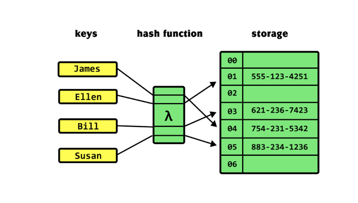
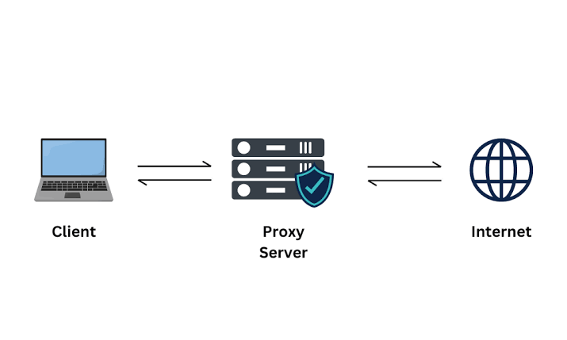

Trusted sources
Obtain software exclusively from official vendor sites to prevent downloading malware embedded in third-party installers. Avoid clicking links in emails or external pages — type the URL directly into the address bar.
How to obtain software safely and verify it hasn’t been tampered with.
Obtain software exclusively from official vendor sites to prevent downloading malware embedded in third-party installers. Avoid clicking links in emails or external pages — type the URL directly into the address bar.

Avoid downloading applications from random websites, file-sharing platforms, or links embedded in unsolicited emails.

Install a hash-checking application (CLI or GUI) to calculate the file’s hash value (e.g., SHA-256). Compare the calculated hash against the official value published on the vendor’s download site to verify file integrity.
Keeping the browser current with security fixes.

Keep browsers updated to apply critical security patches. Updates are frequently integrated directly into the OS update manager or automatically installed within the browser.
Add-ons expand browser functionality — but are also a major attack vector.
Install add-ons exclusively from official repositories like the Chrome Web Store or Microsoft Store.
Avoid third-party sites or unverified software installers, which represent a significant attack vector capable of credential theft, keylogging, and data exfiltration.
Better credential storage than the browser’s built-in password save.

Store credentials inside encrypted vaults rather than plain browser stores.

Use password managers to generate unique, complex passwords per site to eliminate credential reuse risks.
How to verify a site’s identity through TLS certificates.

Inspect security alerts regarding untrusted root authorities, expired certificates, or domain mismatches. Verify certificate details, including issuer and subject common names. Ensure local system date and time settings are correct to prevent false certificate invalidation.
Privacy, data cleanup, sync, and network settings.
Keep pop-up blockers enabled by default to block unwanted notifications and malicious windows. Disable temporarily only for specific troubleshooting, or add site-specific allow/block rules.

Manually or automatically remove stored browsing history, saved passwords, and downloaded file lists from browser settings.

Delete locally stored web assets, images, and cookies to free space and clear stale or sensitive site data.

Launch private windows to prevent session data, history, download lists, and caches from being retained locally once closed.

Sign into the browser profile to synchronize history, favorites, settings, and extensions across multiple devices.
Configure tracking prevention and ad-blocking levels (Basic, Balanced, Strict) within privacy settings to restrict site tracking across visits.

Configure explicit proxy IP addresses and port numbers under OS or browser network settings to route traffic through intermediary servers for caching, URL filtering, and content scanning. Transparent proxies function inline without client-side setup.

Enable DNS over HTTPS (DoH) in browser advanced settings to encrypt plaintext DNS queries, preventing external observers from monitoring requested FQDNs.
Control which browser capabilities and add-ons are active.

Access browser management interfaces (e.g., chrome://extensions or browser settings) to manually enable, disable, or remove specific plug-ins, extensions, or native browser capabilities to minimize exposure to security risks.